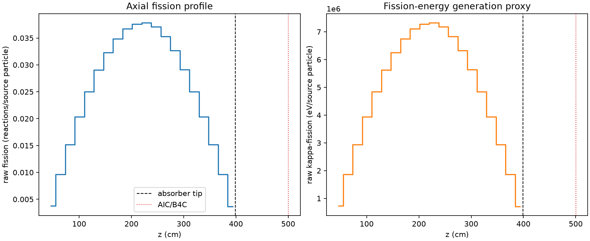
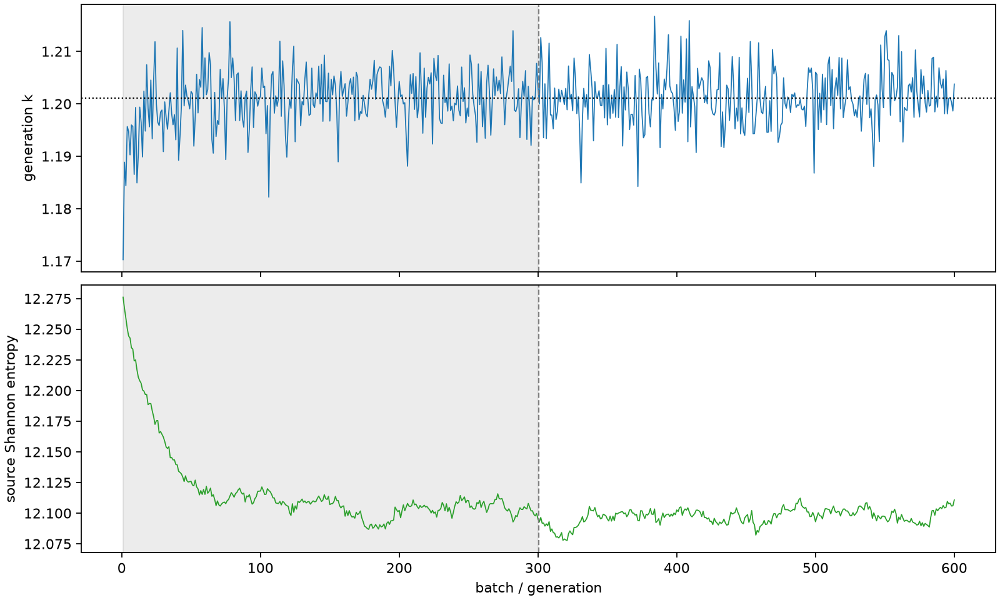

| field | value |
|---|---|
| experiment | V2-STAGE_128_OGRENCI_01-0007 |
| k | 1.2010681343354481 |
| MC standard error | 0.00018606117671233122 |
| seconds | 945.9812139670103 |
| acceptance | not_assessed |
| convergence | review_required |
Completed is output integrity only; physical and statistical review required. Zero tallies do not prove zero production or zero uncertainty.
| diagnostic | value |
|---|---|
| geometric fuel voxels | 5280 |
| zero fission tally voxels | 0 |
| low signal fuel voxels | 0 |
| low signal fission share | 0.0 |
| low signal kappa share | 0.0 |
| important fission share | 0.9500432869413231 |
| previous filter included | 5280 |
| duration estimate s | 1562.5173488400023 |
| actual minus estimate s | -616.5361348729921 |
| fission relative MC error | statistics |
|---|---|
| all_geometric_fuel | {"voxels": 5280, "positive_mean_voxels": 5280, "zero_mean_voxels": 0, "undefined_relative_error_voxels": 0, "median": 0.010672650647125354, "p95": 0.028242393273833044, "maximum": 0.03576674115215677} |
| low_signal | {"voxels": 0, "positive_mean_voxels": 0, "zero_mean_voxels": 0, "undefined_relative_error_voxels": 0, "median": null, "p95": null, "maximum": null} |
| important_95pct | {"voxels": 4282, "positive_mean_voxels": 4282, "zero_mean_voxels": 0, "undefined_relative_error_voxels": 0, "median": 0.010089479248876806, "p95": 0.01454677646264955, "maximum": 0.018909145406004624} |
| outside_previous_filter | {"voxels": 0, "positive_mean_voxels": 0, "zero_mean_voxels": 0, "undefined_relative_error_voxels": 0, "median": null, "p95": null, "maximum": null} |
| kappa_fission relative MC error | statistics |
|---|---|
| all_geometric_fuel | {"voxels": 5280, "positive_mean_voxels": 5280, "zero_mean_voxels": 0, "undefined_relative_error_voxels": 0, "median": 0.010660570964408776, "p95": 0.028210393841313873, "maximum": 0.03571600418795597} |
| low_signal | {"voxels": 0, "positive_mean_voxels": 0, "zero_mean_voxels": 0, "undefined_relative_error_voxels": 0, "median": null, "p95": null, "maximum": null} |
| important_95pct | {"voxels": 4282, "positive_mean_voxels": 4282, "zero_mean_voxels": 0, "undefined_relative_error_voxels": 0, "median": 0.010077566593161752, "p95": 0.014530849052747891, "maximum": 0.018887969558181596} |
| outside_previous_filter | {"voxels": 0, "positive_mean_voxels": 0, "zero_mean_voxels": 0, "undefined_relative_error_voxels": 0, "median": null, "p95": null, "maximum": null} |
| axial bin | fission share | kappa-fission share |
|---|---|---|
| 1 | 0.007755360850377883 | 0.00775568648732712 |
| 2 | 0.01961650902431159 | 0.019616469084065363 |
| 3 | 0.031001471992103437 | 0.03100161977254368 |
| 4 | 0.04153754326323904 | 0.04153742835331108 |
| 5 | 0.051047901896774286 | 0.05104790482022015 |
| 6 | 0.059301978784540424 | 0.059301764942438245 |
| 7 | 0.06588715530953605 | 0.06588696757787052 |
| 8 | 0.07106909873351769 | 0.07106911328760213 |
| 9 | 0.0749047147489777 | 0.07490450424033 |
| 10 | 0.0766205785758483 | 0.07662056818415382 |
| 11 | 0.07710482771475659 | 0.07710489311292719 |
| 12 | 0.07565364722081538 | 0.07565377534241956 |
| 13 | 0.07201538123113546 | 0.07201538769636717 |
| 14 | 0.06666604436425921 | 0.06666560796860356 |
| 15 | 0.05932134198642893 | 0.05932134651415033 |
| 16 | 0.050988445787569156 | 0.05098842789843832 |
| 17 | 0.041479500121760084 | 0.04147952507076993 |
| 18 | 0.030896317989367105 | 0.03089635442010703 |
| 19 | 0.019671818020228198 | 0.0196717716689617 |
| 20 | 0.007460362384453511 | 0.007460883557393116 |
Histories include the inactive-to-active transition at batch 300. kappa-fission approximates fission energy production, not total heat deposition.

